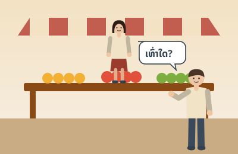
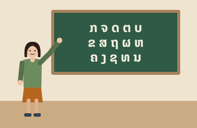
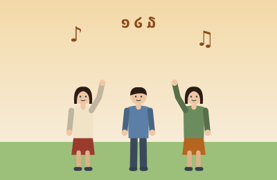

주소phasalao.pages.deviPhone은 Safari, 안드로이드는 Chrome으로
예비 주소: insoo-commits.github.io/lao-app
1홈 화면에 앱으로 설치 한 번 설치하면 아이콘을 눌러 바로 열어요
📱 iPhone · iPad (Safari)공유 ⬆ → 홈 화면에 추가 → 오른쪽 위 추가
📱 안드로이드 (Chrome)⋮ 메뉴 → 앱 설치 또는 홈 화면에 추가 → 설치
💻 PC (Chrome · Edge)주소창 오른쪽 끝 ⊕ 설치 아이콘 → 설치. 바탕화면에서 앱처럼 열려요.
2음성 내려받기 (오프라인용)
- 묶음 화면 맨 아래의 ↓ 음성 mp3 내려받기 (오프라인용) 누르기
- (완료)가 나오면 끝! 인터넷 없이도 소리가 나요.
- “새 음성 있음”이 보이면 한 번 더 누르세요.
꼭 와이파이에서! 전체 약 260MB. 안 받아도 연 묶음의 소리는 바로 나와요.
3듣기 버튼 사용법
🔊 누르기그 문장만 계속 반복 (다시 누르면 멈춤)
묶음 재생 G지금 묶음을 처음부터 끝까지 반복
연속 재생 C다음 묶음으로 쭉 이어서
⟲ 2회 ▾반복 횟수 1~5회
x 1.0 ▾배속 x0.7 ~ x2.0
☑ 한국어 음성 K켜면 한국어 뜻도 읽어 줘요
4메뉴 → 소분류 → 묶음 고르기
위쪽 메뉴를 옆으로 밀어 고르고 → 소분류(예: 01 인사·기본 표현) → 제목 띠의 ▼로 묶음 선택. 처음이면 문자학습(글자·성조) → 기초회화 › 인사부터!
📲 화면을 왼쪽으로 밀면 다음 묶음, 오른쪽은 이전 묶음. 🔍 검색은 라오스어·독음·뜻 모두 돼요 (ໝາກ, 막, 과일).

예문보기 S낱말마다 예문 2개와 실생활 문장, 한글 독음과 뜻, ※ 낱말 풀이까지.

단어공부 W낱말카드. 글자 위 색깔 성조 표시로 높낮이를 한눈에. 누르면 뒤집혀 뜻이 나와요.

확인퀴즈 E4지선다로 뜻 고르기. 배운 것을 바로 확인해요.
🔈
소리가 안 나요? 처음엔 화면을 한 번 눌러야 소리가 나요. 볼륨과 블루투스 연결을 확인하세요.
새 버전은 앱을 완전히 닫았다가 다시 열면 반영돼요. 궁금한 건 메뉴 끝의 도움말에!